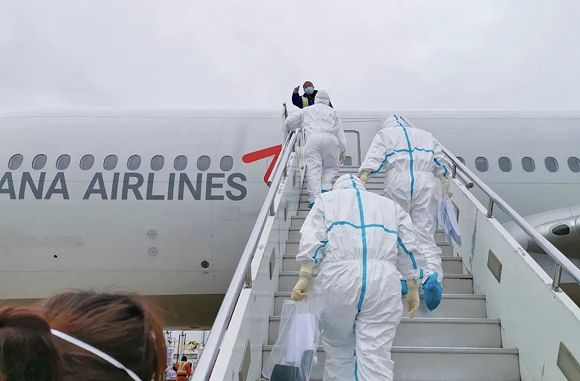
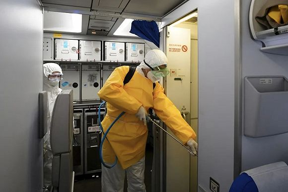

疫情总动员，各地怎么做|多地严防境外输入 湖北探索复产复工
原文链接 备份链接 【财新网】（记者 张兰太）全国境内疫情呈现向好势头，3月6日0-24时，31个省份和“重灾区”湖北新增确诊病例双双首度降至两位数（共99例，其中湖北74例）。疫情防控取得积极成效，但近期除湖北外的其他30个省份的日新增 …

入境人员填报健康状况。图片来源：上海海关
记者：方卓然
“
上海海关对于14天内有过韩国、意大利、伊朗、日本等国家旅行和居住史但体温正常的旅客，会为其安排一条远离普通旅客的线路，将其集中带离机场，实施为期14天的居家或集中健康观察。
”
口岸是进入上海的第一道关，而上海则是许多人从境外进入国内其他地方的一道门。因此，实行严格的口岸防控措施成了防控疫情的重要一步，如何精准、有效地防控境外疫情输入，成了上海面临的一个问题。
3月3日下午，上海市政府新闻办主任、市政府新闻发言人徐威对外表示，所有中外人员，凡是在进入上海之日前14天内，有过重点国家或地区旅居史的，一律实施为期14天的居家或集中隔离健康观察。
3月4日，海关总署对外透露，截止到3月3日，全国海关共发现有发热症状的入境旅客227例，疑似病例63例，海关采样检测和排查转运处共检出核酸阳性病例5例，其中上海有4例。
随后，上海市卫生健康委新闻发言人郑锦透露，目前上海海关移交的4名核酸检测阳性的旅客均确诊为新冠肺炎，其中2例为中国宁夏籍，1例为中国青海籍，1例为中国甘肃籍，均在伊朗留学，均自伊朗德黑兰出发，经泰国曼谷转机后分别于3月2日晚和3月3日凌晨抵达上海浦东国际机场，入关后即被送至集中隔离点观察。

上海海关关员登临来自重点地区的航班。图片来源：上海海关
为了防止境外疫情输入，在上海浦东和虹桥两大机场，上海海关从严开展了针对入境旅客的疫情防控工作。每个国际航班旅客下飞机进入入境大厅前，需要先进入等候区，完成纸质或电子版《健康申明卡》的填写，内容包括14天内居住或旅行过的国家和地区，在此期间是否接触过新冠肺炎患者等。
工作人员核对完旅客的《健康申明卡》后，会引导旅客逐一进入测温通道，通过红外测温仪、耳温计或测温枪等设备对出入境人员进行体温监测，对体温异常者用水银温度计进行复测（必要时至少测量2次，取较高值记录），有发热或呼吸道症状的旅客会被直接带到医学排查室进行排查。
同时，海关关员在做好防护的前提下，会对满足流行病学史且符合发热和/或呼吸道症状的人员采集鼻咽拭子和/或咽拭子样本，或采集血液、深咳痰等样本，送至实验室进行检测。
对于14天内有过韩国、意大利、伊朗、日本等国家旅行和居住史但体温正常的旅客，上海海关工作人员会为其安排一条远离普通旅客的线路，将其集中带离机场，实施为期14天的居家或集中健康观察。
而对判定的确诊病例、疑似病例、有症状人员、密切接触者“四类人员”，则一律按照联防联控机制要求落实转运、隔离、留观等防控措施。

上海海关关员对染疫嫌疑航空器实施检疫处理。图片来源：上海海关
除严格筛查入境人员外，上海浦东和虹桥机场对旅客使用较频繁的航站楼洗手间、母婴室、电梯、自动扶梯等设施以及其他人员密集区域做到每小时消毒一次；对人工和自助值机柜台、现场问讯柜台、旅客座位等设施每天至少消毒三次，高峰期每2小时消毒一次；对旅客必经的登机廊桥实行实时消毒，保障每架次航班均消毒一次。
机场集团相关负责人表示，目前，浦东机场每天对航站楼以及卫星厅内276间卫生间、母婴室和243个旅客休息区域持续消毒；虹桥机场平均每天消毒面积超过45万平方米，相当于60多个足球场。
为保持公共区域空气流通，上海机场集团在确保温度适宜的前提下，还加大了4座航站楼、1座卫星厅及交通中心中央空调系统的新风输送量，适时打开建筑物玻璃幕墙上的侧窗，保持楼内通风良好。机场对所有空调过滤器和滤网全部完成了一次深度消毒，并且启用了新增的1300多套紫外线消毒灯具进行常态化消毒。
未经授权 禁止转载

原文链接 备份链接 【财新网】（记者 张兰太）全国境内疫情呈现向好势头，3月6日0-24时，31个省份和“重灾区”湖北新增确诊病例双双首度降至两位数（共99例，其中湖北74例）。疫情防控取得积极成效，但近期除湖北外的其他30个省份的日新增 …
原文链接 备份链接 【财新网】（记者 张兰太）近期全国各地疫情逐渐得到控制，“重灾区”湖北、武汉疫情近日也出现积极变化，而海外疫情迅速蔓延，每日新增病例数连续超过国内，累计确诊病例数已经破万，严防海外疫情输入或“倒灌”风险成为全国各地疫情 …
原文链接 备份链接 澎湃新闻记者 邓玲玮 何颖晗 见习记者 陈少颖 近日，在机场某通道区域，一名入境旅客在填写健康申报卡时，填写了“咳嗽”，这引起了海关医学巡查人员的高度注意。 海关关员旋即引导该名旅客进入体温监测通道，红外测温显示体温正 …
原文链接 备份链接 海外疫情紧张，在外中国人如何回国？韩国来华航班为何爆满？中国是否会对疫情高风险国家人员采取限制措施？ 3月1日，国务院联防联控机制召开新闻发布会，就如何有效防控海外疫情输入的相关问题，给出权威回答。 发布会现场 全国治 …
原文链接 备份链接 韩国中央防疫对策本部25日通报，截至当地时间当天下午4时，韩国较当天上午9时新增84例新冠肺炎确诊病例，累计确诊病例达977例，共出现10例死亡病例。与前一天下午4时相比，一天内增加144例。 韩国总统文在寅25日表 …